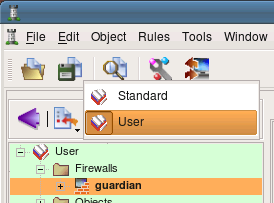
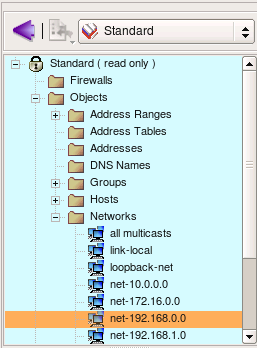
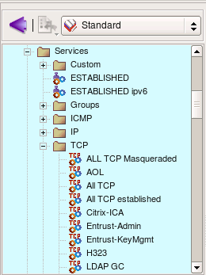
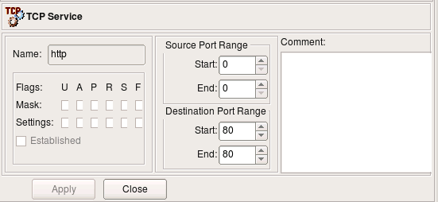
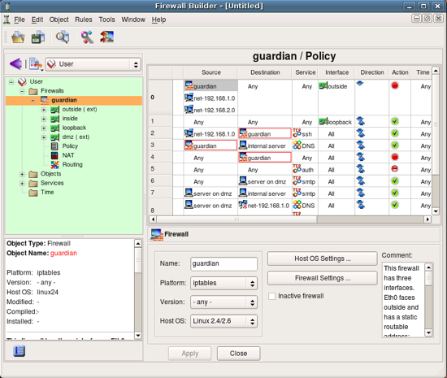
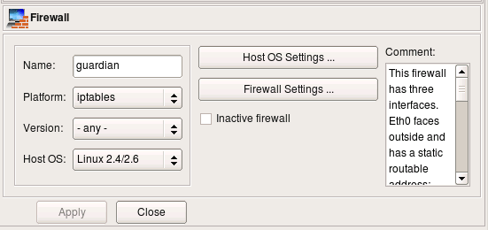
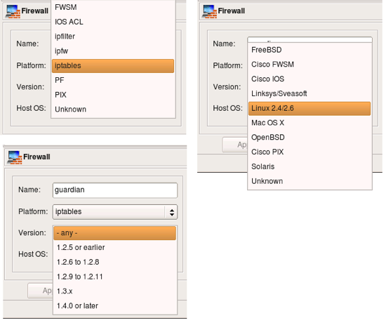
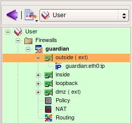
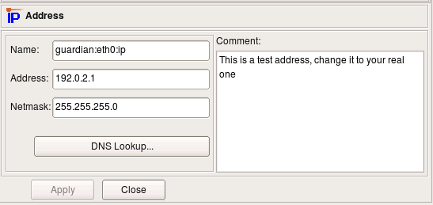

Lets take a little tour of the network and service objects that come standard with the program. You can use these preconfigured objects to build policy and NAT rules for your firewall.
Objects in the tree are orginized in libraries, you can switch between libraries usinf drop-down menu above the tree. Firewall Builder comes with a collection of address, network, service and time interval objects in the library called "Standard". Lets take a look at them. Notice that the background color of the panel that shows objects tree depends on the chosen object library. This makes it easier to keep track of the library currently opened in the program.
Folder Objects/Hosts contains few host objects used in standard firewall templates. Folder Objects/Network contains network objects that represent various standard address ranges and blocks, such as multicast, net 127/8, networks defined in RFC1918 and so on.
Firewall Builder also comes with extensive collection of TCP, UDP and ICMP service objects that describe commonly used protocols. This slide shows some TCP objects (all of them do not fit in the screenshot).
Here is an example of a simple TCP service. It defines source and destination port ranges (in this case source port range is not defined and there is only one destination port 80). TCP service object can also define any combination of tcp flags the firewall should inspect and also which ones of them should be set in order for a packet to match this object. In the case of the service "http" we do not need to define any flags.
Now lets take a look at the objects created as part of the new firewall object guardian. In order to do this, switch to the library User where this object was created. To open an object in the editor panel to inspect or change it, double click on it in the tree. Also, if you click on an object in the policy rule to select it, it will automatically open in the tree on the left.
First, the firewall object itself.
Every object in fwbuilder has basic attributes such as its name and comment. Other attributes depend on the object type.
Attributes of the firewall object include platform (can be iptables, pf, ipfilter, etc.), version (platform-depended) and host OS. Buttons Host OS Settings and Firewall Settings open dialogs with many additional attributes that depend on the firewall platform and host OS. More on these later.
Here are the choices for the firewall platform, version (for iptables) and host OS.
Interfaces of the firewall are represented by objects located below the Firewall object in the tree. We refer to them as "children" of the firewall object. This slide demonstrates properties of the interface eth0. To open it in the editor double click on it in the tree. If editor panel is already open and shows some object, it is sufficient to select new object in the tree to reveal it in the editor panel (no need to double click).
IP and MAC addresses of interfaces are represented by child objects in the tree located below corresponding interface.
Interface object has several attributes that define its function, such as "Management interface", "external" etc.
Here is IP address of interface eth0, external interface of the firewall. The address and netmask are attributes of the child object of the type "IPv4 address". Here the address is "192.0.2.1" and netmask "255.255.255.0". Button "DNS Lookup" can be used to determine ip address using DNS. The program runs DNS query for the "A" record for the name of the parent firewall object.
| Previous | Next |